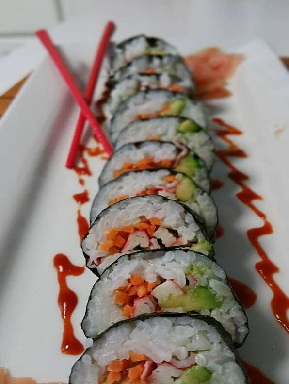

California Roll Sushi

Description
A California roll or California maki is a makizushi sushi roll that is usually rolled inside-out, and containing cucumber, crab or imitation crab, and avocado. Sometimes crab salad is substituted for the crab stick, and often the outer layer of rice in an inside-out roll (uramaki) is sprinkled with toasted sesame seeds or roe such as tobiko from flying fish.
As one of the most popular styles of sushi in Canada and the United States, the California roll has been influential in sushi's global popularity, and in inspiring sushi chefs around the world to create non-traditional fusion cuisine.
Ingredients
- 1 cup uncooked short-grain white rice
- 1 cup water
- 1/4 cup rice vinegar
- 1 tablespoon white sugar
- 1/2 cup imitation crabmeat, finely chopped
- 1/4 cup mayonnaise
- 8 sheets nori (dry seaweed)
- 2 1/2 tablespoons sesame seeds
- 1 cucumber, cut into thin spears
- 2 avocados - pitted, peeled, and sliced the long way
Steps
- Wash the rice in several changes of water until the rinse water is no longer cloudy, drain well, and place in a covered pan or rice cooker with 1 cup water. Bring to a boil, reduce heat to a simmer, and cover the pan. Allow the rice to simmer until the top looks dry, about 15 minutes. Turn off the heat, and let stand for 10 minutes to absorb the rest of the water.
- Mix the rice vinegar and sugar in a small bowl until the sugar has dissolved, and stir the mixture into the cooked rice until well combined. Allow the rice to cool, and set aside.
- Mix the imitation crabmeat with mayonnaise in a bowl, and set aside. To roll the sushi, cover a bamboo rolling mat with plastic wrap. Lay a sheet of nori, shiny side down, on the plastic wrap. With wet fingers, firmly pat a thin, even layer of prepared rice over the nori, leaving 1/4 inch uncovered at the bottom edge of the sheet. Sprinkle the rice with about 1/2 teaspoon of sesame seeds, and gently press them into the rice. Carefully flip the nori sheet over so the seaweed side is up.
- Place 2 or 3 long cucumber spears, 2 or 3 slices of avocado, and about 1 tablespoon of imitation crab mixture in a line across the nori sheet, about 1/4 from the uncovered edge. Pick up the edge of the bamboo rolling sheet, fold the bottom edge of the sheet up, enclosing the filling, and tightly roll the sushi into a cylinder about 1 1/2 inch in diameter. Once the sushi is rolled, wrap it in the mat and gently squeeze to compact it tightly.
- Cut each roll into 1 inch pieces with a very sharp knife dipped in water.